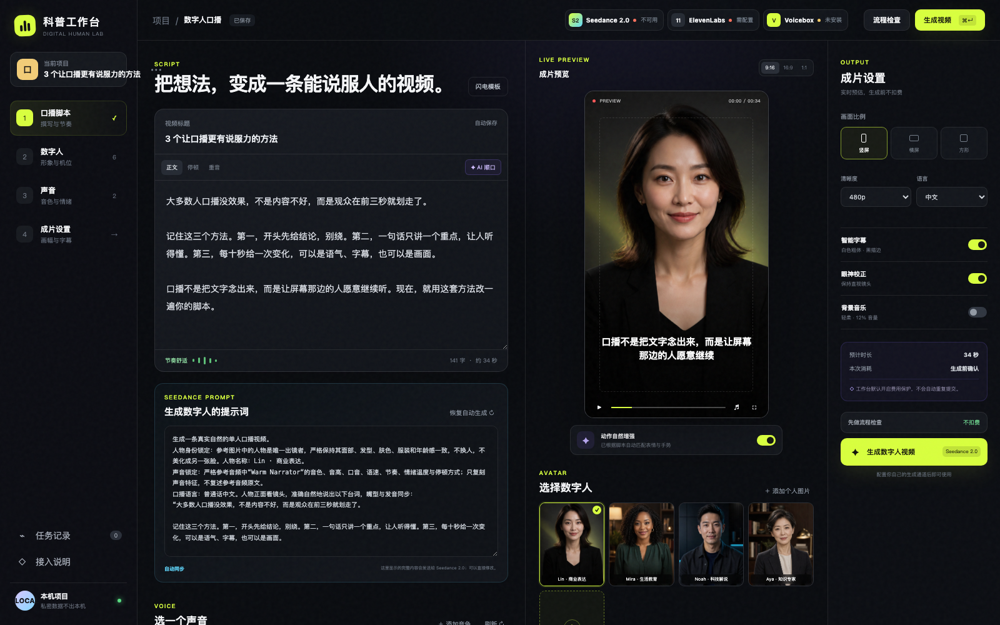

11国际多语种
ElevenLabs
适合多语种口播、Voice Library 和云端配音试听。
官方价格与购买 ↗从口播脚本、人物与声音，到 Seedance 2.0 成片。API 由用户在供应商官网自行购买，密钥只保存在自己的电脑。

工作台不代售额度，也不会接触你的密钥。选择适合自己的供应商，开通后只在本机配置。
适合多语种口播、Voice Library 和云端配音试听。
官方价格与购买 ↗支持豆包语音合成大模型，以及更自然、更有表现力的中文配音。
火山引擎官方开通 ↗支持 Doubao‑Seed‑TTS 2.0 与 Doubao‑Seed‑ICL 2.0 音色能力。
官方开通与购买指南 ↗推荐 Voicebox + Qwen3‑TTS 1.7B。软件会检测 Voicebox 是否安装、模型是否下载、服务是否运行；已就绪就直接连接，未检测到才显示下载入口。
GitHub、安装包、网页和日志均不保存 API Key、Token、私人节点地址或个人音色。公开接口只返回配置状态布尔值。